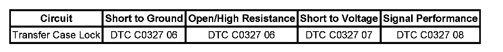
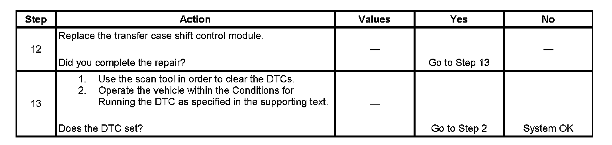

C0327
DTC C0327
Circuit Description
The transfer case encoder is an analog sensor that returns a signal that represents the physical position of the transfer case sector shaft. This signal represents the mode or range position that the transfer case is currently in. This sensor is made up of the following 3 circuits:
^ 5-volt reference circuit
^ Encoder signal circuit
^ Encoder low reference circuit
This DTC detects an out of range reading from the encoder signal, a short to voltage on the 5 volt reference circuit.
DTC Descriptor
This diagnostic procedure supports the following DTC:
DTC C0327 07
Encoder Circuit Voltage Above Threshold
DTC C0327 06
Encoder Circuit Short to Ground or Open
DTC C0327 08
Encoder Circuit Signal Invalid
Diagnostic Fault Information
Perform the Diagnostic System Check - Vehicle Initial Inspection and Diagnostic Overview

Conditions for Setting the DTC
The transfer case shift control module has a predefined range, 0.5-4.5 volts, in which the encoder feed back should stay within. The DTC sets if the encoder signal feed back falls out of this range for 100 milliseconds.
Action Taken When the DTC Sets
^ All motor activity stops and the transfer case lock engages.
^ The SERVICE 4WD indicator remains illuminated for the remainder of the current ignition cycle.
Conditions for Clearing the DTC
^ The transfer case shift control module will clear the DTC if the condition for setting the DTC is not currently present.
^ A history DTC will clear after 100 consecutive ignition cycles without a fault present.
^ History DTCs can be cleared using a scan tool.
Test Description
The numbers below refer to the step numbers on the diagnostic table.
2. This step checks for a voltage reading on the scan tool.
3. This step tests the encoder circuit for a current malfunction.
4. This step tests for an internal encoder malfunction which is present only in certain areas of the encoder sensor.
5. This step tests for proper reference voltage at the encoder.
6. This step tests the 5-volt regulator encoder circuit for a short to voltage, short to ground, an open or high resistance.
7. After determining if the reference voltage measured in Step 4 is correct, Step 6 reviews the reading originally measured in Step 3 to see if it is higher or lower than what is expected. This step helps determine whether the encoder signal circuit is being pulled high or low.
8. This step tests the encoder signal circuit and the encoder low reference circuit for a short to voltage.
9. This step helps determine a faulty encoder.
10. This step tests the encoder signal circuit and the encoder low reference circuit for an open or a short to ground.
Step 1 - Step 11:
Step 12 - Step 13:
